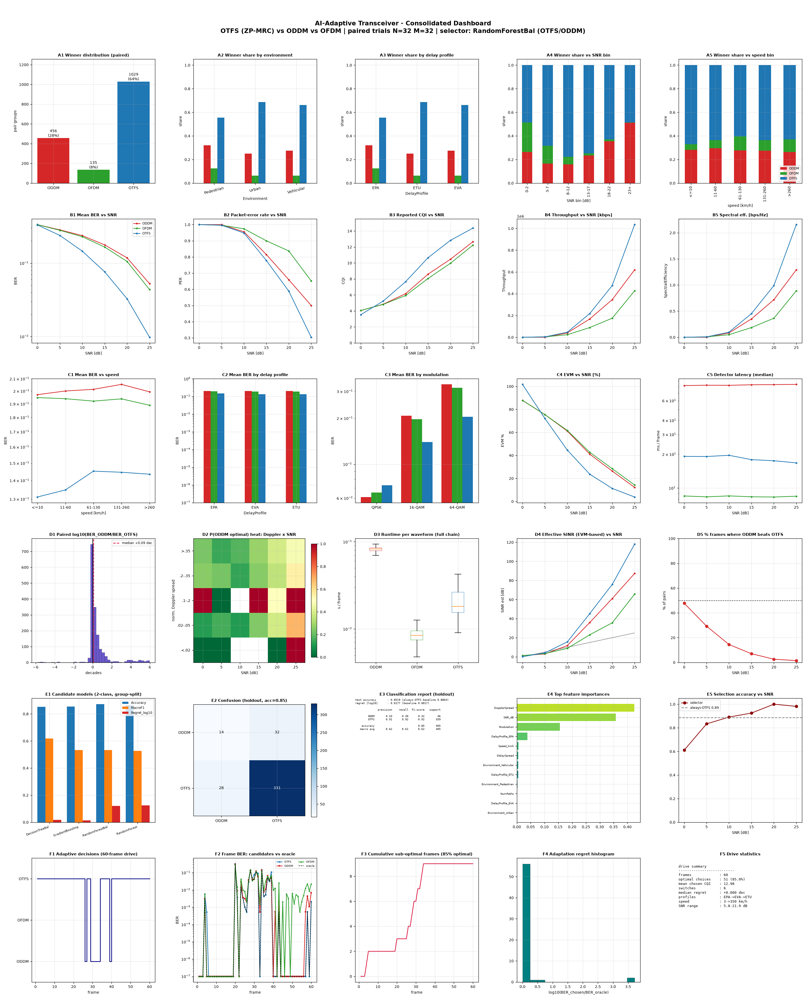

Paired-trial dataset: 9720 rows | pair groups: 1620 | real-time drive: 60 frames

| Layer | File |
|---|---|
| Dataset | waveform_dataset.csv |
| Real-time trace | adaptive_trace.csv |
| Model comparison | waveform_model_comparison_2c.csv |
| Training report | waveform_selector_report_2c.txt |
| Trained model | models/waveform_selector_2c.joblib |